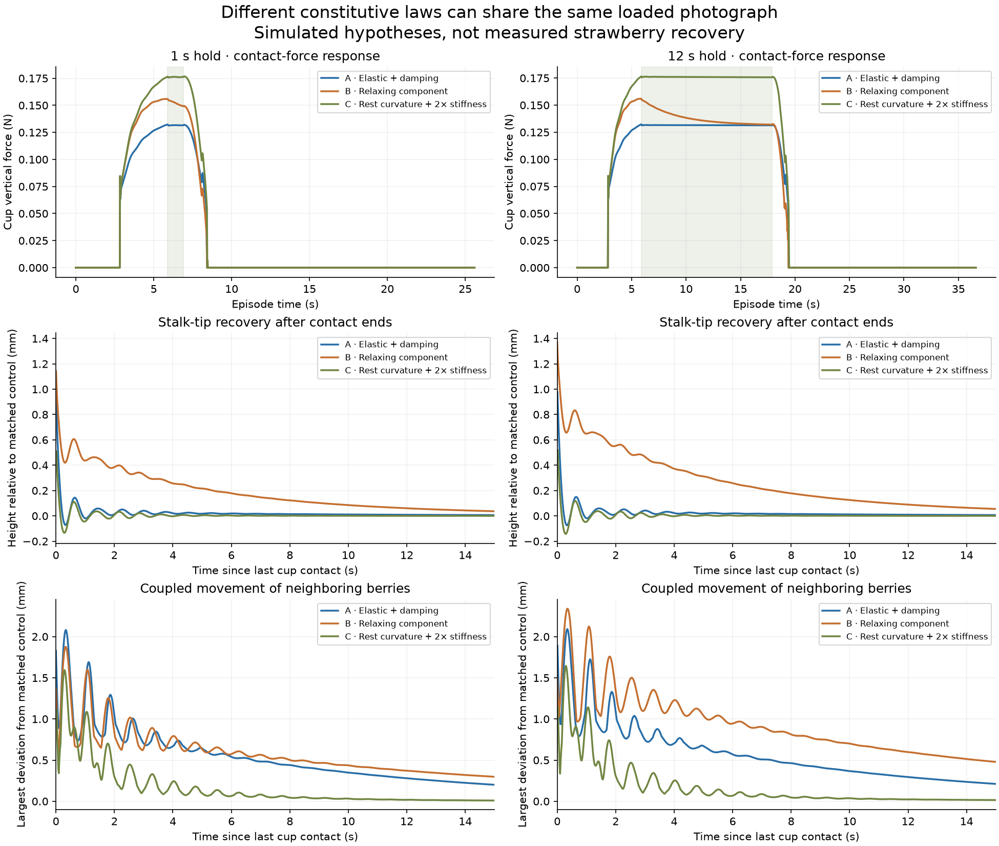

01 / Crown & stem bases
 Gerald Holmes / Cal Poly
Gerald Holmes / Cal PolyCompact crown geometry, layered leaf bases and tapered stalks replace the earlier weak-looking junction. Roots remain a reference; the simulated crown is anchored.
Anatomy & stiffness study ↗The complete updated plant, with stronger stem bases, shape-aware fruit mass and inertia, and revised surface anatomy. Explore it, apply a recorded contact test, then compare with contact switched off.
Gerald Holmes / Cal PolyCompact crown geometry, layered leaf bases and tapered stalks replace the earlier weak-looking junction. Roots remain a reference; the simulated crown is anchored.
Anatomy & stiffness study ↗ Outline study after Nagamatsu et al.; fitted view, not held-out 3D validation
Outline study after Nagamatsu et al.; fitted view, not held-out 3D validationAsymmetric outlines change the collision shape, center of mass and inertia. Gravity acts on that fruit shape; orientation is not simply assigned along the stalk.
Inspect six fruit shapes ↗
Simulated material alternatives; no measured plant calibrationElastic, relaxing and retained-curvature models predict different recovery. Those trials remain separate: this demo uses the shared elastic/damped plant baseline.
Compare recovery experiments ↗These are force-limited probe diagnostics, not learned robot actions. Rigid fruit does not model bruising. Detailed calyx visuals still use simplified contact geometry. Baseline and updated contact tests use different plants and probe paths; only their settled views are offered as a same-camera visual comparison.